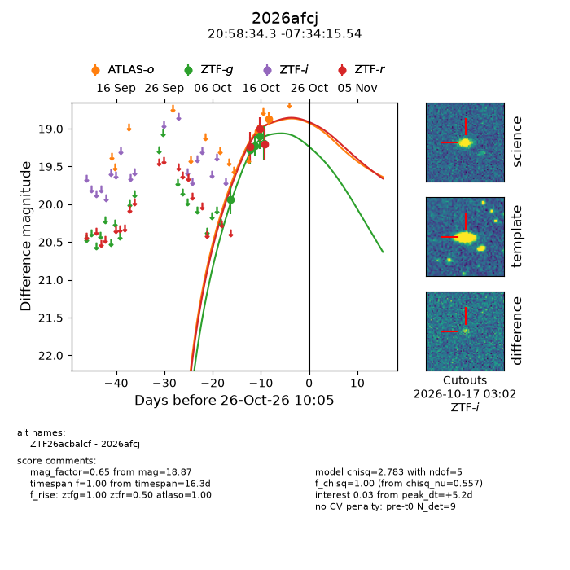
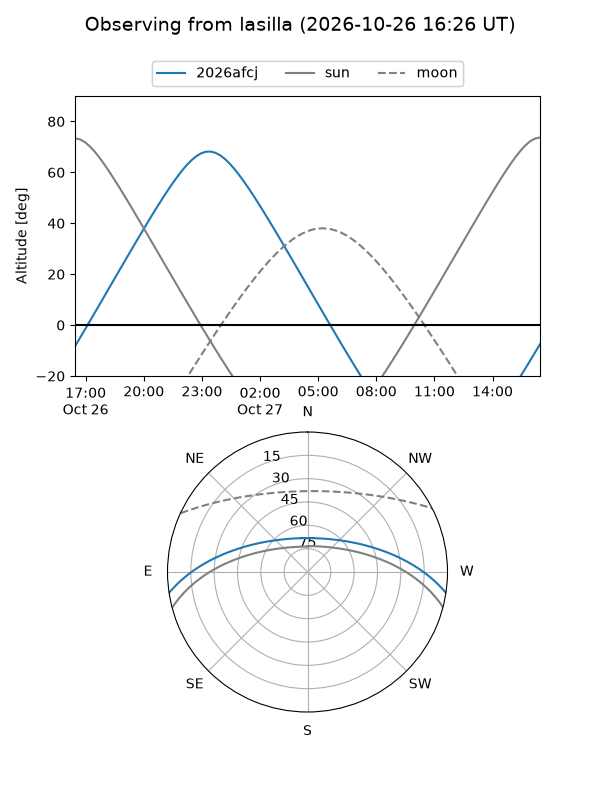
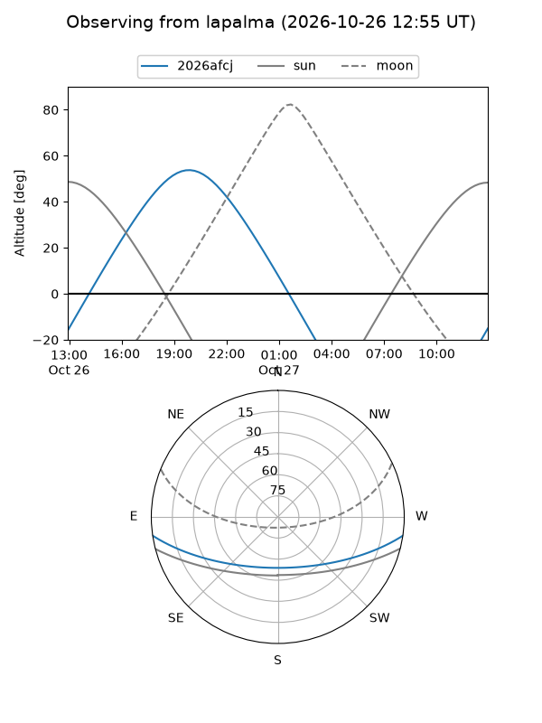
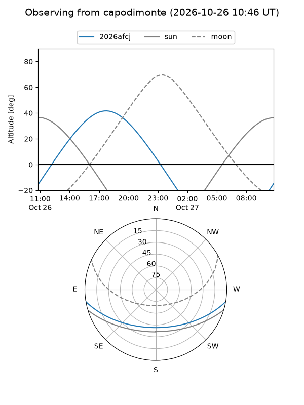
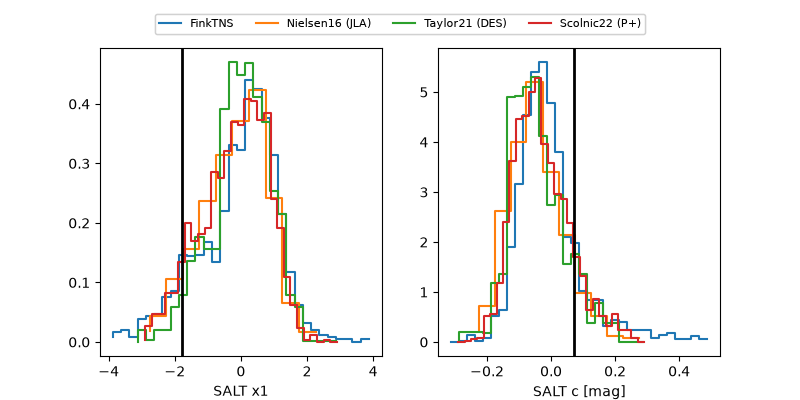

2026afcj
Target 2026afcj at 2026-10-26 21:46
Aliases and brokers:
FINK-ZTF: ztf.fink-portal.org/ZTF26acbalcf
Lasair-ZTF: lasair-ztf.lsst.ac.uk/objects/ZTF26acbalcf
ALeRCE-ZTF: alerce.online/object/ZTF26acbalcf
YSE-PZ: ziggy.ucolick.org/yse/transient_detail/2026afcj
TNS name: wis-tns.org/object/2026afcj
Direct TNS query: direct search
alt names
ZTF26acbalcf (ztf,fink_ztf)
2026afcj (tns,yse)
Coordinates:
equatorial (ra, dec) = 314.6427,-7.57098
equatorial (HMS+DMS) = 20:58:34.26,-07:34:15.54
galactic (l, b) = (41.0913,-31.65174)
Flags:
peak dt: +5.7
Photometry:
last atlaso=18.87, ztfg=19.10, ztfr=19.20
2 atlaso, 4 ztfg, 3 ztfr detections
Lightcurve

Visibility



Additional plots
